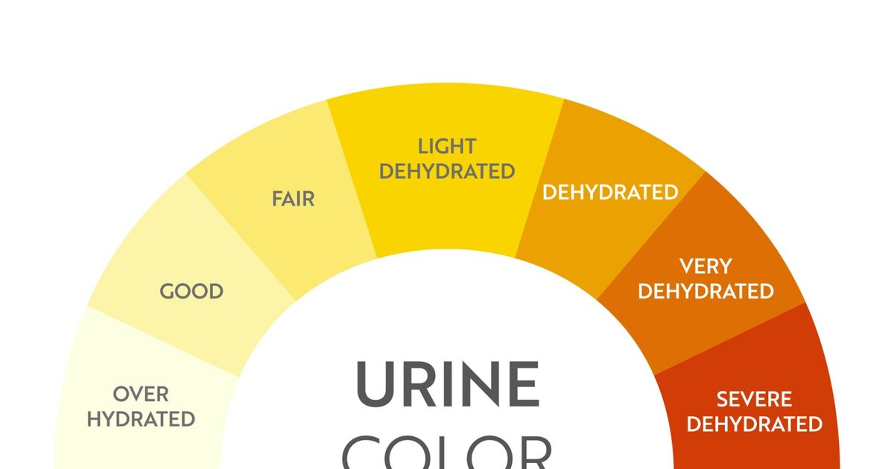

I have a confession. I talk about pee more than any other topic. At parties, at work, even at the dinner table once. My family is used to it now. My friends know that if they ask me how to tell if they’re hydrated, I’m going to ask them what color their urine is. It’s not gross. It’s data. Your urine color is the single best real‑time feedback tool you have for hydration. It’s free, it’s immediate, and it doesn’t require any special equipment. You just look before you flush. That’s it. The color comes from a pigment called urochrome, which is a waste product from your body breaking down hemoglobin. When you’re well hydrated, your urine is dilute, and the pigment is spread out. It looks pale yellow, like straw or lemonade. When you’re dehydrated, your urine is concentrated, and the pigment is more dense. It looks dark yellow, amber, or even brown. Here’s the scale I use with my clients. I even made an emoji version because people like visuals. Clear or colorless means you’re overhydrated. Your kidneys are working overtime to flush out excess water. This isn’t dangerous for most people, but it can dilute your electrolytes if you maintain it for a long time. Clear urine is not the goal. It means you’re drinking more than you need. Pale straw yellow 🟡 is optimal. That’s the color of a light beer or very diluted lemonade. Your hydration is on point. Your kidneys are excreting waste efficiently. You feel good. This is where you want to be most of the time. Transparent yellow is still well hydrated. Slightly darker than pale straw but not by much. You’re fine. No need to panic. Just keep doing what you’re doing. Dark yellow 🟠 means you’re mildly dehydrated. You’ve lost about 1‑2% of your body weight in fluid. You might not feel thirsty yet, but your performance and cognition are already impaired. Drink 500 milliliters (17 ounces) of water now. Amber 🟤 means moderate dehydration. You’ve lost 2‑4% of your body weight. You’re definitely thirsty. Your mouth might be dry. Your head might ache. Drink 1 liter (34 ounces) over the next hour. If you’ve been exercising, add electrolytes. Orange or brown means severe dehydration. This is a medical concern, especially if you also have dizziness, confusion, or haven’t peed in many hours. Drink fluids slowly and seek medical attention if you don’t improve. Other colors can mean different things. Bright yellow or neon green often comes from B vitamins. That’s harmless. Pink or red can be blood from a kidney stone, infection, or after intense exercise. See a doctor. Blue or green is rare and usually from food dye or medication. I had a client who thought his dark yellow urine was normal because he only drank one bottle of water a day. He said, “It’s been that color for years.” I said, “That’s not normal. That’s chronic dehydration.” We increased his fluid to 2.5 liters per day, and within a week his urine was pale straw. He said his headaches disappeared and his skin looked better. He had been living with mild dehydration for so long that he forgot what normal felt like. Another client, a runner named Jen, was obsessing over her urine color. She wanted it to be completely clear. She was drinking 4 liters of water per day and still worried. Her urine was clear. That’s overhydration. She was flushing out electrolytes and feeling tired and “fuzzy.” I told her to aim for pale straw instead of clear. She cut back to 3 liters and felt much better. The exception to the urine color rule is first thing in the morning. Your first void after waking is always darker because your body has been concentrating urine overnight. That’s normal. Don’t panic. Drink your morning 500 mL of water, then check your second or third pee of the day. Another exception is if you take certain medications or supplements. B vitamins make urine bright yellow. Some antibiotics can darken it. Rhubarb can turn it pinkish. Beets can turn it red. That’s not dehydration. That’s just your body excreting pigments. The urine color test is especially useful for older adults. Thirst sensation decreases with age. Your 75‑year‑old parent might not feel thirsty even when they’re dehydrated. But their urine color will tell the truth. I’ve had clients whose parents were hospitalized for dehydration because they didn’t feel thirsty. If someone had looked at their urine color at home, they could have caught it earlier. I also use urine color with my athlete clients during long events. I tell them to check their urine before they start and again after they finish. If it’s dark yellow or amber post‑race, they didn’t drink enough during. We adjust their plan for next time. One of my triathlete clients, a woman named Priya, used to finish races with dark amber urine. She was drinking only when thirsty, which wasn’t enough. I gave her a drinking schedule and a pee‑color target. After her next race, her urine was pale straw. She said, “I can’t believe I was leaving that much performance on the table.” She PR’d by 10 minutes. The urine color chart isn’t perfect. It doesn’t tell you about electrolyte balance. You can be well hydrated in terms of water but low on sodium. That’s why I use urine color plus symptoms. Headaches, cramps, fatigue, dark urine? Probably dehydrated. Headaches, cramps, fatigue, but urine is pale? Probably low electrolytes. For most people, the urine color chart is enough. Aim for pale straw. If you’re dark yellow, drink 500 mL. If you’re amber, drink 1 liter. That’s the whole protocol. I have a tool that includes a urine color tracker.Hydration Goal Setter
Log your urine color each day. The app learns your patterns and nudges you when you’re consistently dark.
All data stays in your browser — we never see it.
Daily Water Intake Calculator
Get a starting fluid goal, then use urine color to fine‑tune it.
All data stays in your browser — we never see it.
Exercise Sweat Loss Estimator
Use pre‑ and post‑workout weight to calculate sweat rate. Then check your urine color to see if you replaced enough.
All data stays in your browser — we never see it.